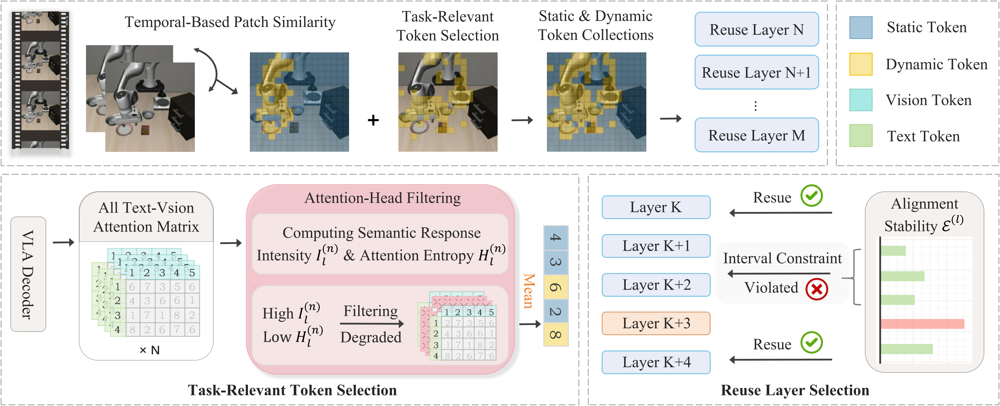
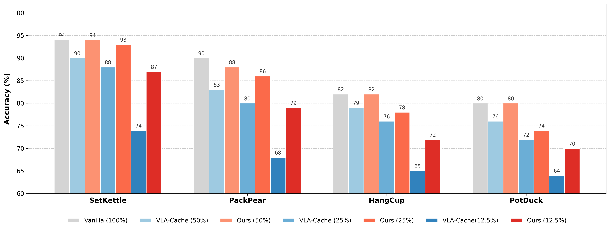

Text–Vision Synergistic Token Caching: A Training-Free Framework for Efficient Vision-Language-Action Inference
Anonymous Author(s)
Real-world robot demonstrations with TVCache.
Overview
Vision-language-action models repeatedly process dense visual tokens, making inference expensive during robot execution. Token caching reduces this cost by reusing temporally redundant representations, but existing approaches underuse the interaction between language and vision when deciding what and where to cache.
TVCache is a training-free framework that makes cache reuse task-aware at two complementary resolutions. It filters unreliable attention heads to obtain cleaner language-conditioned token relevance, and selects reuse layers according to cross-modal stability. The method plugs into pretrained VLAs without retraining or architectural modification.
Existing VLA caching can suffer from token-level spatial misalignment and layer-level depth mismatch when text–vision reliability is not explicitly considered.
Methodology
TVCache refines both the spatial token decision and the depth-wise reuse decision while preserving the training-free nature of token caching.

TVCache combines temporal patch similarity with filtered text–vision attention, then allocates cache reuse to stable network depths.
Task-relevant token selection
Attention heads are scored by their text-conditioned response intensity and spatial concentration. Filtering diffuse or weak heads produces a cleaner relevance map that protects task-critical visual tokens from reuse errors.
Reuse-layer selection
Text–vision entropy differences provide a layer-wise stability signal. TVCache places reuse at stable depths while maintaining separation between selected layers, avoiding both premature reuse and redundant recomputation.
Results
Average success rate on LIBERO at matched token-retention ratios. TVCache consistently improves over VLA-Cache, with the largest gain appearing under the tightest OpenVLA-OFT budget.
On OpenVLA-OFT, TVCache improves average success by 14.50 percentage points over VLA-Cache at 12.5% token retention while reducing FLOPs by 2.44× relative to full-token inference.
VLA model
Tokens retained
VLA-Cache
TVCache
Gain
OpenVLA-OFT
50%
96.80%
97.55%
+0.75 pp
OpenVLA-OFT
25%
87.85%
95.55%
+7.70 pp
OpenVLA-OFT
12.5%
69.50%
84.00%
+14.50 pp
BitVLA
50%
93.90%
95.00%
+1.10 pp
BitVLA
25%
93.15%
94.90%
+1.75 pp
BitVLA
12.5%
92.50%
94.05%
+1.55 pp
VLA-Adapter
50%
77.35%
79.95%
+2.60 pp
VLA-Adapter
25%
48.35%
54.40%
+6.05 pp
π0.5
50%
97.20%
98.45%
+1.25 pp
π0.5
25%
89.20%
94.75%
+5.55 pp

Real-world evaluation across SetKettle, PackPear, HangCup, and PotDuck under matched retention ratios.